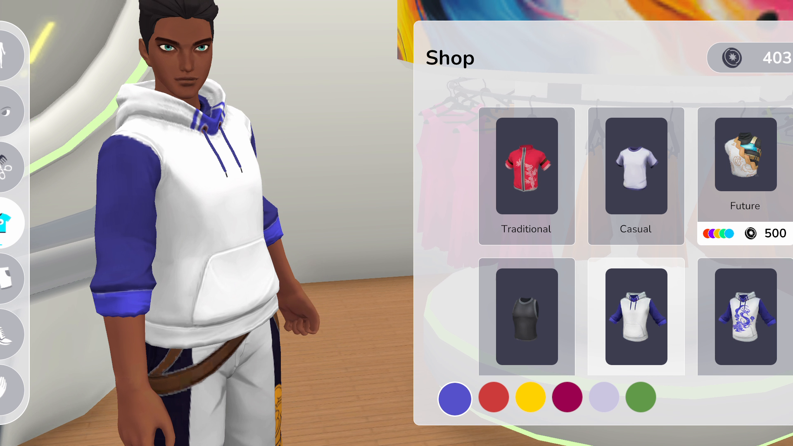

An NPC crowd, ~95% faster on the GPU
SOLAR · Performance
Moving a thousand NPCs off the Animator and onto GPU skinning — same scene, same look, a fraction of the frame budget.
Read the case study →Senior Unity Developer · Systems & Tools Programmer
Game Systems · Editor Tooling · Automation · Performance
I build structured game systems and the custom tooling that automates and speeds up the whole team's work — backed by real performance optimization.
Three things I'm consistently the person for on a team.
Custom editor windows and automation that turn slow, repetitive work into fast validated workflows — inside Unity and outside it. My differentiator.
Structured, self-contained systems (inventory, equipment, data-driven content) with a modular architecture that's easy to extend and iterate on.
Real profiling-driven optimization: Jobs System, Burst, memory and render tuning to run on the hardware players actually own.
Real problems from shipped games — the approach, the tools, and what I actually built.
SOLAR · Performance
Moving a thousand NPCs off the Animator and onto GPU skinning — same scene, same look, a fraction of the frame budget.
Read the case study →
SOLAR · Game Systems
A node-graph garment system with backend sync, its own authoring tools, and the same data driving the player and the NPC crowd.
Read the case study →SOLAR · Automation
Editor tools that turn error-prone setup — Addressables, API client, builds — into one-click, validated actions.
Read the case study →I'm open to Senior Unity Developer roles — remote, worldwide.
Let's talk